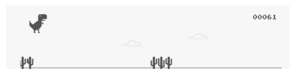
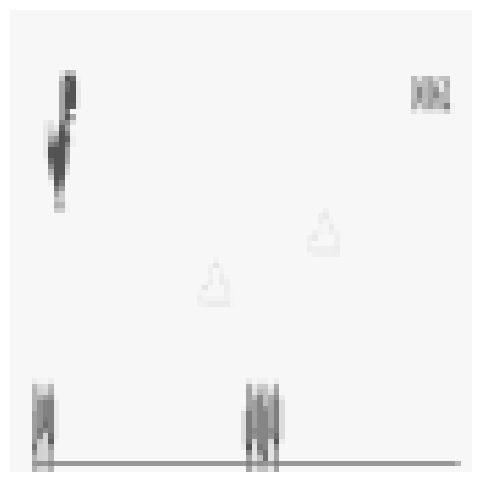
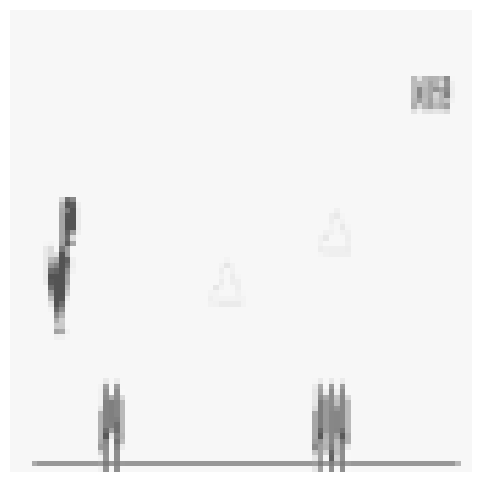
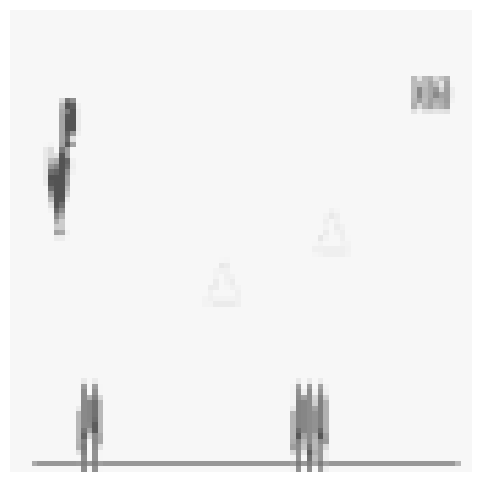
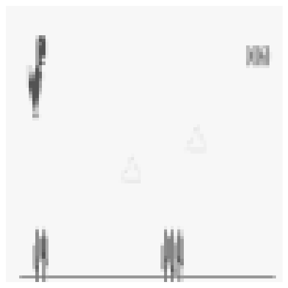
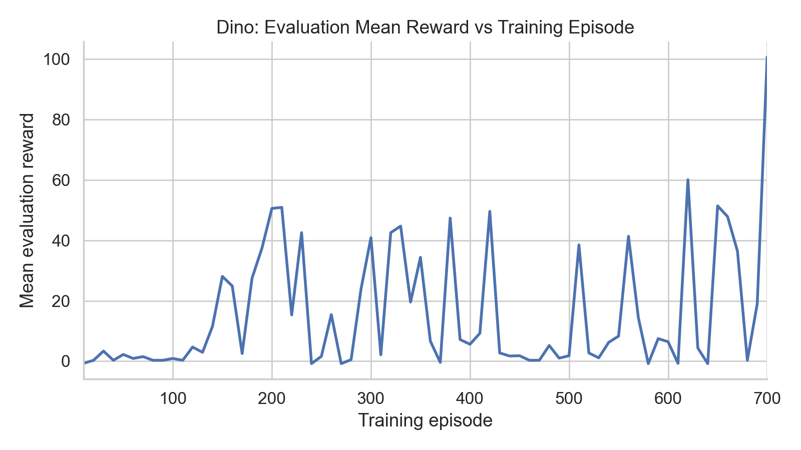
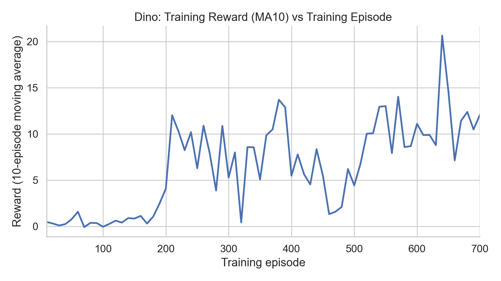
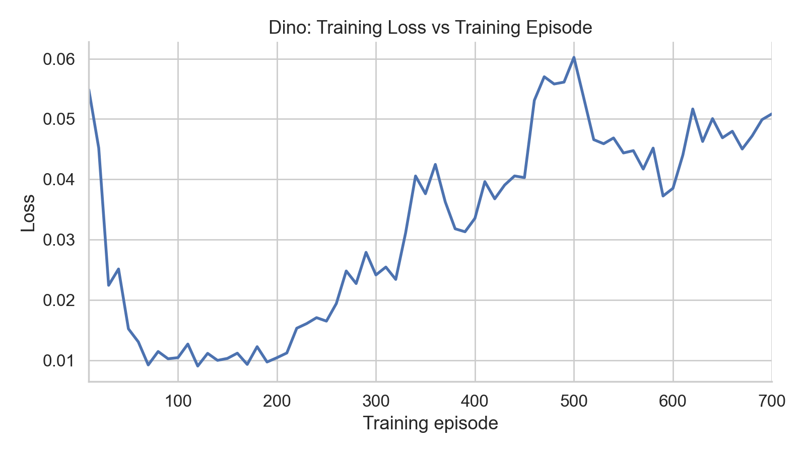
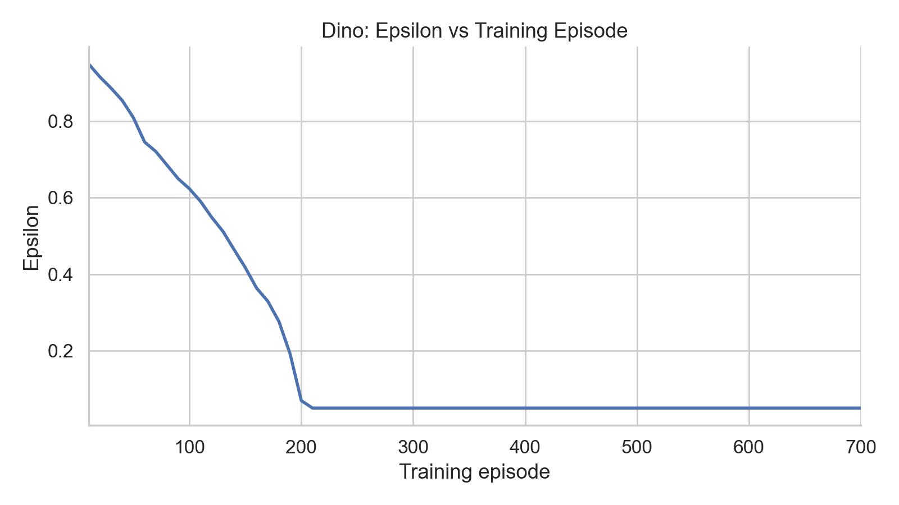
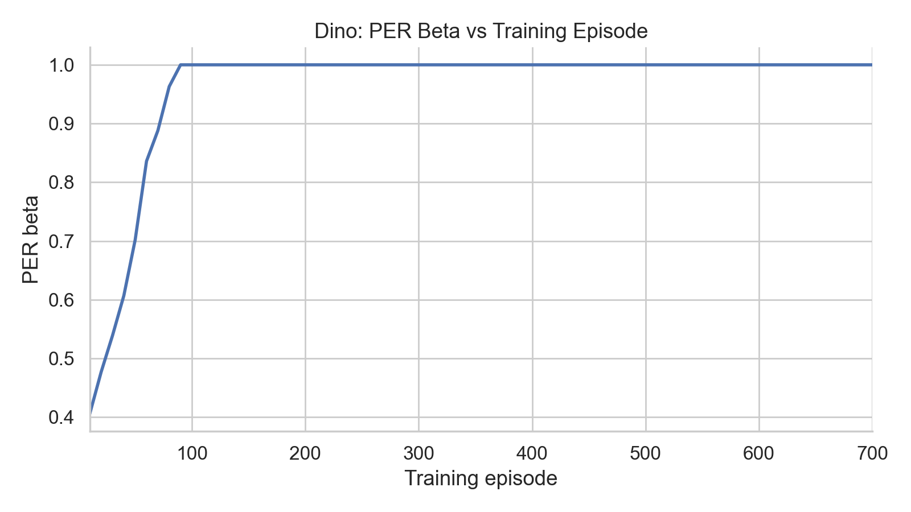

Dino Game Reinforcement Learning
Overview
This project explores reinforcement learning by training agents to play the Chrome Dino game. Specifically, I implemented a version of Double Deuiling DQN (Deep Q-Network) to play the game below. Give it a try!
The Dino Game Environment
The Dino game requires you to control a dinosaur to jump over obstacles and survive as long as possible. Additionally, the game increases in speed over time which makes it more challenging as time goes on.
State Space: The Dino game has a continuous, high-dimensional state space which is represented by the visual observation of the game. For faster and more efficient model training, I preprocess and resize each frame to be an 84 x 84 grayscale image. Another trick to help the model capture temporal information and motion is to stack every 4 consecutive frames together. This makes the final state a (4, 84, 84) tensor. This means each state is represented by 4 x 84 * 84 = 28,224-dimensions.


Frame Stacking: To capture information about motion, I stack every 4 consecutive frames together. Without stacking frames, the model would not be able to capture the direction of movement or velocity of the dinosaur. This is especially important since the game speeds up over time.




Action Space: When playing the game youself, you have the option to either jump, duck, or do nothing. To simplify the logic and make it easier for the model to learn, I restrict the action space to only jump and do nothing. The action space is:
- \(a_0\) = No action: Continue running
- \(a_1\) = Jump: Avoid obstacles
Reward Shaping: The reward function encourages survival and successful obstacle avoidance. The agent receives +0.1 for each time step survived, and -1.0 when it collides with an obstacle.
Implementation Details:
Unfortunately, there is no Gymnasium environment for the Chrome Dino game. So, I had to deal with additional overhead of screen capturing and preprocessing the frames. Gymnasium is still a great source for this project as I modeled my custom Dino environment after the environment class documented here. To control the rate of screen capture, I use a target FPS (frames per second) parameter to guide the timing. I calculate the delay between frame captures as dt = 1.0 / fps and use time.sleep(dt) between captures. This ensures that frames are captured at a consistent, controlled rate rather than as fast as possible, which helps maintain temporal consistency in the frame stack and prevents the agent from learning on redundant or too-rapid observations.
What is Q-Learning?
Introduction
Q-Learning is a model-free reinforcement learning algorithm that learns the optimal action-value function, \(Q(s,a)\), which tells you the expected reward from taking action \(a\) in state \(s\).
\( Q^*(s, a) = \mathbb{E}[ r + \gamma \max_{a'} Q^*(s', a') ] \)
To estimate the optimal action-value function, we use the Q-learning update rule:\( Q(s, a) \leftarrow Q(s, a) + \alpha [ \) \( r + \gamma \max_{a'} Q(s', a') \) \( - Q(s, a)] \)
Simplifying the above equation, we get:\( Q(s, a) \leftarrow Q(s, a) + \alpha [ \) \( y - Q(s, a) \) \( ] \)
where
- \(y = r + \gamma \max_{a'} Q(s', a')\) is the Temporal-Difference (TD) target
- \(y - Q(s, a)\) is the TD error
- \(\alpha\) is the learning rate
DQN
Let's examine the Chrome Dino game environment and understand why tabular Q-learning is insufficient for this problem.
Why Tabular Q-Learning Fails
Tabular Q-learning requires storing a Q-value for every possible state-action pair. For the Dino game, with a state space of 28,224 dimensions, this is infeasible due to the memory requirements and the number of transitions we would need to learn accurate Q-values. Some techniques like discretization can help reduce the state space, but it is still infeasible to store a Q-value for every possible state-action pair.
Deep Q-Network (DQN) Solution
Deep Q-Network (DQN) addresses these limitations by using a neural network to approximate the Q-function instead of storing a table. The key insight is that similar states should have similar Q-values, and a neural network can learn to generalize from a limited set of experiences.
The DQN architecture takes the state (4 stacked 84×84 grayscale frames) as input and outputs Q-values for all possible actions in a single forward pass. Instead of learning \(Q(s, a)\) for each state-action pair separately, the network learns a function \(Q_\theta(s, a)\) parameterized by weights \(\theta\) that can estimate Q-values for any given state. To summarize,
- Input (s): (4, 84, 84) tensor of stacked frames, plus a normalized episode timestep \(t\)
- Output Vector of Q-values for all actions: \([Q(s, a_0), Q(s, a_1)]\)
The network is trained using the Q-learning update rule, but instead of updating a table entry, we update the network weights using gradient descent: \[ \theta \leftarrow \theta - \alpha \nabla_\theta \mathcal{L}(\theta) \] where the loss function aims to minimize the squared difference between the predicted and target Q-values: \( (y - Q_\theta(s, a))^2 \). Expanding this out, we get: \[ \mathcal{L}(\theta) = \mathbb{E}_{(s,a,r,s') \sim \mathcal{D}} \left[ \left( r + \gamma \max_{a'} Q(s', a') - Q_\theta(s, a) \right)^2 \right] \]
Target Network
One critical component of DQN is the target network, which is a separate copy of the Q-network that is used to compute the TD target. The target network has parameters \(\theta^-\), which are periodically copied from the main network parameters \(\theta\) (typically every few thousand steps).
The TD target in DQN is computed as: \[ y = r + \gamma \max_{a'} Q(s', a'; \theta^-) \] Notice that we use the target network (with parameters \(\theta^-\)) to estimate the Q-value of the next state, not the main network that we're currently updating.
Why use a target network? Without it, the TD target would be: \[ y = r + \gamma \max_{a'} Q(s', a'; \theta) \] This creates a problem: every time we update the main network's weights \(\theta\), the target \(y\) also changes, because it depends on the same parameters. This makes the learning target "move" with every update, similar to trying to hit a moving target. The network is chasing a goal that keeps changing, which leads to:
- Training instability: The constantly shifting target makes it difficult for the network to converge
- Oscillations: Q-value estimates can oscillate wildly as the target and current estimates chase each other
- Slow convergence: The network takes much longer to learn stable Q-value estimates
By using a target network that updates less frequently, we provide a stable target for the main network to learn from. The target network acts as a "snapshot" of the Q-function that changes slowly, giving the main network time to catch up and learn more stable estimates. This is one of the key innovations that made deep reinforcement learning practical.
Improvements to DQN
Double DQN
Vanilla DQN suffers from a problem known as overestimation bias. Recall that the Q-learning update relies on computing the TD target using the target network: \(y = r + \gamma \max_{a'} Q(s', a'; \theta^-)\). The issue is that the same network (the target network) is used both to select the best action (via \(\max_{a'}\)) and to evaluate its value. This creates a positive bias: the network tends to overestimate Q-values, especially early in training when the estimates are noisy.
Double DQN addresses this by decoupling action selection from action evaluation. Instead of using the target network for both operations, Double DQN uses the main network to select the best action, and the target network to evaluate its value: \[ y = r + \gamma Q(s', \arg\max_{a'} Q(s', a'; \theta); \theta^-) \] This simple change significantly reduces overestimation bias and leads to more stable and accurate Q-value estimates.
What Double DQN solves:
- Overestimation bias: Prevents the network from systematically overestimating Q-values, which can lead to suboptimal policies.
- Training stability: More accurate Q-value estimates result in more stable learning and faster convergence.
- Performance: Often achieves better final performance compared to vanilla DQN, especially in complex environments.
Dueling DQN
Dueling DQN improves upon DQN by changing the network architecture to separately estimate the state value \(V(s)\) and the advantage \(A(s, a)\). The key insight is that for many states, it's unnecessary to estimate the value of each action independently. Instead, we can decompose the Q-value as: \[ Q(s, a) = V(s) + A(s, a) \] where:
- \(V(s)\): The value of being in state \(s\) (how good the state is overall)
- \(A(s, a)\): The advantage of taking action \(a\) in state \(s\) relative to the average action (how much better or worse this action is compared to others)
Why this decomposition helps: In many states, the overall quality of the state is more important than the relative differences between actions. Consider examples from the Dino game:
- Clear path ahead (no obstacles visible): In this state, all actions (no action, jump, duck) have similar values because the state itself is safe. The state value \(V(s)\) is high (good state to be in), while the advantages \(A(s, a)\) for all actions are close to zero since no action is particularly better than another. Vanilla DQN would need to learn that \(Q(s, \text{no action}) \approx Q(s, \text{jump}) \approx Q(s, \text{duck})\), which requires learning three similar values. Dueling DQN only needs to learn one high state value and three small advantages, which is more efficient.
- Obstacle approaching (cactus visible): Here, the state value \(V(s)\) indicates danger (lower value), but the advantage stream can quickly learn that jumping has a large positive advantage while doing nothing has a large negative advantage. The decomposition allows the network to separately learn "this is a dangerous state" (via \(V(s)\)) and "jumping is the right action here" (via \(A(s, \text{jump})\)).
By separating state value from action advantages, Dueling DQN can learn that "being in a safe state is good" or "being near an obstacle is dangerous" without having to relearn this for every possible action. The advantage stream then focuses on learning the relative differences between actions, which are typically much smaller and easier to learn.
However, this decomposition is unidentifiable—adding a constant to \(V(s)\) and subtracting it from \(A(s, a)\) gives the same Q-value. To make it identifiable, Dueling DQN uses the following aggregation: \[ Q(s, a; \theta) = V(s; \theta) + \left( A(s, a; \theta) - \frac{1}{|\mathcal{A}|} \sum_{a'} A(s, a'; \theta) \right) \] This forces the advantage function to have zero mean, making the decomposition unique. The network architecture splits into two streams after the convolutional layers: one estimates \(V(s)\) and the other estimates \(A(s, a)\), which are then combined to produce \(Q(s, a)\).
Network Architecture
The DQN network uses a Dueling architecture that separates state value estimation from action advantage estimation. The network consists of five main components:
1. Shared Feature Extractor: Three convolutional layers process the input frames (4 stacked 84×84 grayscale images). The first layer uses a large 8×8 kernel with stride 4 to quickly reduce spatial dimensions, followed by a 4×4 kernel with stride 2, and finally a 3×3 kernel with stride 1. Each layer is followed by ReLU activation. This extracts spatial features like obstacles, the dinosaur position, and game elements.
2. Timestep Context Feature: The Dino game speeds up as an episode progresses, so the same visual scene at different times can require different jump timing. Frame stacking captures short-term motion but does not explicitly tell the network how far into the episode it is. To address this, I concatenate a normalized timestep \(t\) to the flattened convolutional features before the value and advantage streams. The timestep is the step index within the current episode, mapped to \([0, 1)\) via: \[ t_{\text{norm}} = 1 - e^{-t/200} \] This gives the network a direct signal for game speed and urgency without changing the visual preprocessing pipeline.
3. Value Stream: After concatenating the conv features with \(t_{\text{norm}}\), a fully connected layer with 512 units processes the combined features to estimate \(V(s)\)—the overall value of being in state \(s\), regardless of which action is taken.
4. Advantage Stream: A parallel fully connected layer (also 512 units) takes the same combined features and estimates \(A(s, a)\)—the advantage of taking action \(a\) in state \(s\) compared to the average action. The advantage head outputs one value per action.
5. Q-value Combination: The final Q-values are computed as \(Q(s, a) = V(s) + (A(s, a) - \text{mean}_a A(s, a))\). The mean subtraction ensures identifiability and allows the network to learn that some states are inherently valuable (high \(V(s)\)) while others require specific actions (high \(A(s, a)\) for certain actions).
class DuelingDQNNetwork(nn.Module):
"""
Dueling architecture:
Q(s,a) = V(s) + (A(s,a) - mean_a A(s,a))
Input: (B, 4, 84, 84) + normalized timestep t in [0, 1)
Output: (B, num_actions) # Q-values for each action
"""
def __init__(self, obs_channels=4, num_actions=2, context_dim=1):
super().__init__()
# Shared feature extractor
self.conv_net = nn.Sequential(
nn.Conv2d(obs_channels, 32, kernel_size=8, stride=4), # -> (32, 20, 20)
nn.ReLU(),
nn.Conv2d(32, 64, kernel_size=4, stride=2), # -> (64, 9, 9)
nn.ReLU(),
nn.Conv2d(64, 64, kernel_size=3, stride=1), # -> (64, 7, 7)
nn.ReLU(),
)
with torch.no_grad():
dummy = torch.zeros(1, obs_channels, 84, 84)
n_flat = self.conv_net(dummy).view(1, -1).shape[1]
self.context_dim = context_dim
shared_input_dim = n_flat + self.context_dim
# Value stream: V(s)
self.value_fc = nn.Sequential(
nn.Linear(shared_input_dim, 512),
nn.ReLU(),
)
self.value_head = nn.Linear(512, 1)
# Advantage stream: A(s,a)
self.advantage_fc = nn.Sequential(
nn.Linear(shared_input_dim, 512),
nn.ReLU(),
)
self.advantage_head = nn.Linear(512, num_actions)
def forward(self, x, context=None):
"""
x: (B, C, H, W)
context: (B, 1) normalized timestep t_norm = 1 - exp(-t / 200)
Returns:
q_values: (B, num_actions)
"""
x = self.conv_net(x)
x = x.view(x.size(0), -1)
if context is None:
context = torch.zeros(x.size(0), self.context_dim, device=x.device, dtype=x.dtype)
x = torch.cat([x, context], dim=1)
v = self.value_fc(x)
v = self.value_head(v) # (B, 1)
a = self.advantage_fc(x)
a = self.advantage_head(a) # (B, num_actions)
# Combine streams with mean-centered advantage
q = v + (a - a.mean(dim=1, keepdim=True))
return qLearning from past experiences
Now with the DQN described above and the loss function defined, we can update the network weights. But which experiences do we use to update the network weights? In practice, we use a replay buffer \(\mathcal{D}\) to
- Store past experiences (s, a, r, s') in a replay buffer so they can be resused
- Sample a batch of experiences from the buffer to update the network weights
- Breaking the temporal correlation of consecutive experiences
Prioritized Experience Replay (PER)
Standard experience replay samples experiences uniformly at random from the replay buffer. However, not all experiences are equally valuable for learning. Prioritized Experience Replay (PER) addresses this by sampling experiences with probability proportional to their TD error, prioritizing experiences that the agent can learn more from.
Motivation: The TD error \(|r + \gamma \max_{a'} Q(s', a'; \theta^-) - Q(s, a; \theta)|\) measures how "surprising" or "unexpected" an experience is. A large TD error indicates that the current Q-value estimate is far from what it should be, meaning the agent has more to learn from this experience. Conversely, experiences with small TD errors are already well-learned and provide less new information.
In standard experience replay, the agent might repeatedly sample experiences it already knows well (low TD error) while rarely sampling experiences it needs to learn from (high TD error). This is inefficient—the agent wastes computation on experiences that don't improve its understanding.
How PER works: Instead of uniform sampling, PER assigns each experience a priority \(p_i\) based on its TD error: \[ p_i = |\delta_i| + \epsilon \] where \(\delta_i\) is the TD error for experience \(i\), and \(\epsilon\) is a small positive constant to ensure all experiences have a non-zero probability of being sampled. Experiences are then sampled with probability: \[ P(i) = \frac{p_i^\alpha}{\sum_k p_k^\alpha} \] where \(\alpha\) controls how much prioritization is used (\(\alpha = 0\) gives uniform sampling, \(\alpha = 1\) gives full prioritization).
Importance sampling correction: Since we're changing the sampling distribution, we need to correct for the bias this introduces. PER uses importance sampling weights: \[ w_i = \left( \frac{1}{N} \cdot \frac{1}{P(i)} \right)^\beta \] where \(N\) is the buffer size and \(\beta\) controls the amount of correction (\(\beta = 1\) fully corrects for the bias). Note that more important samples (high priority \(P(i)\)) actually receive lower weights because they're sampled more frequently—we downweight each occurrence to correct for over-representation and maintain unbiased learning. These weights are normalized and used to scale the TD error in the loss function.
Benefits of PER over standard experience replay:
- Faster learning: By focusing on experiences with high TD error, the agent learns more efficiently
- Handles rare events: Important but infrequent experiences (like successfully avoiding a difficult obstacle) are more likely to be sampled and learned from
For the Dino game, PER is beneficial because:
- The agent encounters many similar "clear path" states that have low TD error and don't need frequent replay
- Critical moments (like successfully jumping over obstacles or failing to jump) have high TD error and benefit from prioritized replay
- As the game speeds up, the agent needs to quickly learn from mistakes, which PER facilitates by ensuring high-error experiences are replayed more often
Results
The agent was trained for 700 episodes using Double Dueling DQN with Prioritized Experience Replay. Evaluation runs every 10 episodes; the plots below show training dynamics through episode 700.





\(\epsilon\) (exploration): In epsilon-greedy action selection, \(\epsilon\) is the probability of taking a random action instead of the greedy Q-max action. It linearly decays from 1.0 to 0.05 over the first ~200 episodes, then stays at the minimum for the remaining ~70% of training. This is likely too aggressive for a 700-episode run, since the agent stops exploring early while eval reward is still highly variable.
\(\beta\) (PER correction): \(\beta\) anneals from 0.4 toward 1.0 to correct for the bias introduced by prioritized sampling (see PER section above). It reaches 1.0 by episode ~90 and stays there for the rest of training. Full correction for most of training is fine, but a slower schedule stretched toward episode 700 would keep stronger prioritization during the noisier early phase.
Agent Rollouts
Evaluation rollouts from episode 700. The first video shows the raw captured frames, the second is what the agent sees after preprocessing the video frames.
As you can see, the agent is able to time its jumps over the obstacles and survive for a long time, even as the game speeds up. It even learns to jump over the flying pterodactyls which only appear in the later stages of the game.